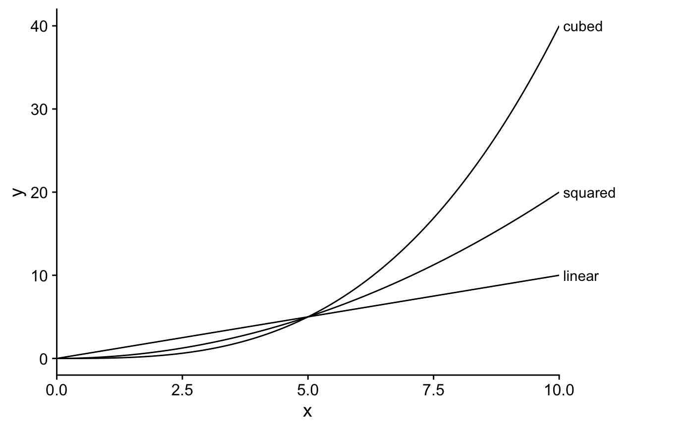
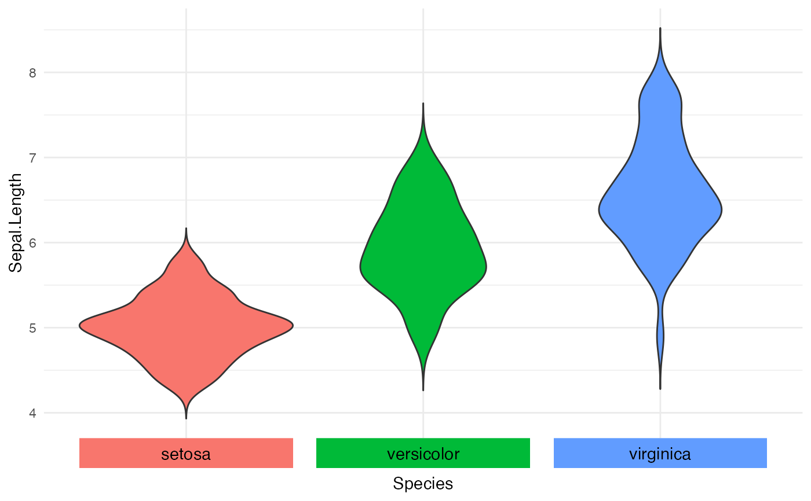
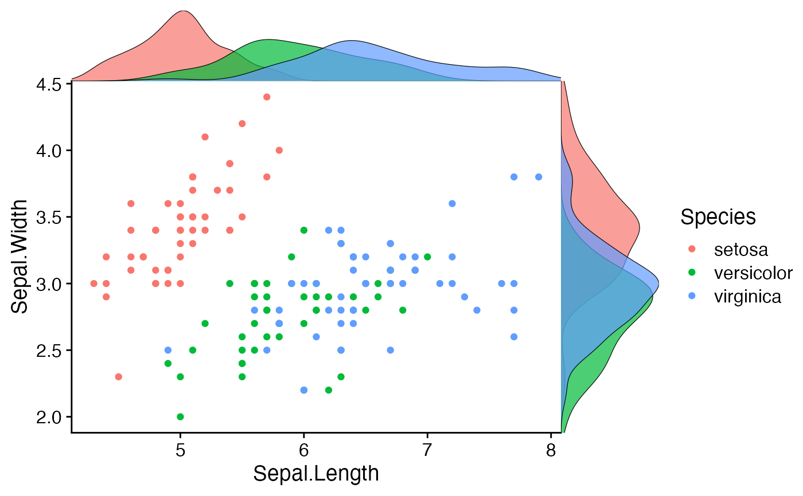

R/axis_canvas.R
axis_canvas.RdThis function takes an existing ggplot2 plot and copies one or both of the axis into a new plot.
The main idea is to use this in conjunction with insert_xaxis_grob() or insert_yaxis_grob() to
draw custom axis-like objects or margin annotations. Importantly, while this function works for
both continuous and discrete scales, notice that discrete scales are converted into continuous scales
in the returned axis canvas. The levels of the discrete scale are placed at continuous values of
1, 2, 3, etc. See Examples for an example of how to convert a discrete scale into a continuous
scale.
axis_canvas(plot, axis = "y", data = NULL, mapping = aes(), xlim = NULL, ylim = NULL, coord_flip = FALSE)
| plot | The plot defining the x and/or y axis range for the axis canvas. |
|---|---|
| axis | Specifies which axis to copy from |
| data | (optional) Data to be displayed in this layer. |
| mapping | (optional) Aesthetic mapping to be used in this layer. |
| xlim | (optional) Vector of two numbers specifying the limits of the x axis. Ignored
if the x axis is copied over from |
| ylim | (optional) Vector of two numbers specifying the limits of the y axis. Ignored
if the y axis is copied over from |
| coord_flip | (optional) If |
#> #>#> #> #>#> #> #>#> #> #>library(tidyr) library(ggplot2) theme_set(theme_half_open()) x <- seq(0, 10, .1) d <- data.frame(x, linear = x, squared = x*x/5, cubed = x*x*x/25) %>% gather(fun, y, -x) pmain <- ggplot(d, aes(x, y, group = fun)) + geom_line() + scale_x_continuous(expand = c(0, 0)) paxis <- axis_canvas(pmain, axis = "y") + geom_text(data = filter(d, x == max(x)), aes(y = y, label = paste0(" ", fun)), x = 0, hjust = 0, vjust = 0.5) ggdraw(insert_yaxis_grob(pmain, paxis, grid::unit(.25, "null")))# discrete scale with integrated color legend pmain <- ggplot(iris, aes(x = Species, y = Sepal.Length, fill = Species)) + geom_violin(trim = FALSE) + guides(fill = "none") + scale_x_discrete(labels = NULL) + theme_minimal() label_data <- data.frame(x = 1:nlevels(iris$Species), Species = levels(iris$Species)) paxis <- axis_canvas(pmain, axis = "x", data = label_data, mapping = aes(x = x)) + geom_tile(aes(fill = Species, y = 0.5), width = 0.9, height = 0.3) + geom_text(aes(label = Species, y = 0.5), hjust = 0.5, vjust = 0.5, size = 11/.pt) ggdraw(insert_xaxis_grob(pmain, paxis, grid::unit(.07, "null"), position = "bottom"))# add marginal density distributions to plot pmain <- ggplot(iris, aes(x=Sepal.Length, y=Sepal.Width, color=Species)) + geom_point() xdens <- axis_canvas(pmain, axis = "x") + geom_density(data=iris, aes(x=Sepal.Length, fill=Species), alpha=0.7, size=.2) # need to set `coord_flip = TRUE` if you plan to use `coord_flip()` ydens <- axis_canvas(pmain, axis = "y", coord_flip = TRUE) + geom_density(data=iris, aes(x=Sepal.Width, fill=Species), alpha=0.7, size=.2) + coord_flip() p1 <- insert_xaxis_grob(pmain, xdens, grid::unit(.2, "null"), position = "top") p2 <- insert_yaxis_grob(p1, ydens, grid::unit(.2, "null"), position = "right") ggdraw(p2)